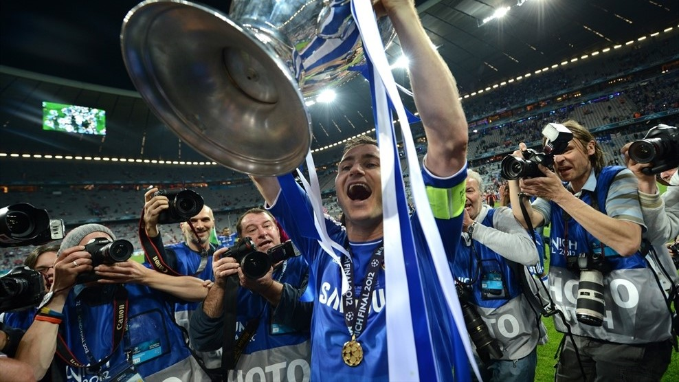

Champions League 100 club: Frank Lampard...
A European champion with Chelsea in 2012, Frank Lampard is the latest UEFA Champions League centurion in the spotlight.
Appearances
Total: 105Chelsea: 102
Manchester City: 3
Goals
Chelsea: 23
Best performance: winner (Chelsea, 2012)
If you don't remember him ...
When Lampard finally left Stamford Bridge in 2014, he departed as Chelsea's all-time record scorer with 211 goals – an incredible feat for a midfielder, but a deserved haul for a player who combined hard work, stamina and vision. Those qualities shone through countless times in his favourite route to goal: the late run into the area. "He's got that knack," said his uncle and former boss at West Ham, Harry Redknapp. "Every time the ball comes in the box, he'll be there running in."
Lampard's tireless running and superb reading of the game also made him a great foil for any forward, and he racked up over 100 assists in the Premier League – many of those finished off by Didier Drogba. "Frank is the best midfield player I played with, the most intelligent and efficient," said Drogba, with Lampard now applying his intelligence and winning mentality to the manager's job at Derby County.
How he made it to 100 appearances
The son of ex-West Ham defender Frank Lampard Sr, the talented midfielder started out at his father's old club before beginning a glittering 13-year spell with Chelsea in 2001. He made his UEFA Champions League debut in 2003/04, scoring four goals as the Blues got to the semis, and featured in the competition every season during his stay – clinching the title in 2011/12 and reaching his century against Paris Saint-Germain in the 2013/14 quarter-finals.
His best moments
Wearing the captain's armband as Chelsea beat Bayern 5-4 on penalties after a 1-1 draw to win the 2012 UEFA Champions League final in Munich. Lampard netted in the shoot-out as the Londoners lifted the trophy for the first time at the home of their opponents.
Captain again as Chelsea captured the UEFA Europa League title the very next season following a 2-1 victory over Benfica in Amsterdam. Lampard helped his side into the showpiece with a trio of assists against Basel in the semi-finals.

Scoring twice against Aston Villa on 11 May 2013 to first catch Bobby Tambling as Chelsea's all-time leading goalscorer and then send himself clear in the club history books. His landmark second came after a trademark late surge into the area.
What others said about him
"A magnificent example of English leadership – when I see him on the field, it makes me happy."Carlo Ancelotti, former Chelsea manager "He was a great professional and a great example to follow. Arriving in England, I remember Didier Drogba telling me: 'Just watch Lampard, because you have to learn.' He had a hunger to score goals and to make the difference, and I've seen him score the winning goal so many times." Florent Malouda, former Chelsea team-mate
"One of my best players ever, one of my best professionals ever; a Chelsea legend and a legend in the Premier League." José Mourinho, former Chelsea manager